OS GOVERNANTES DO OLIMPO
DEUSES GREGOS
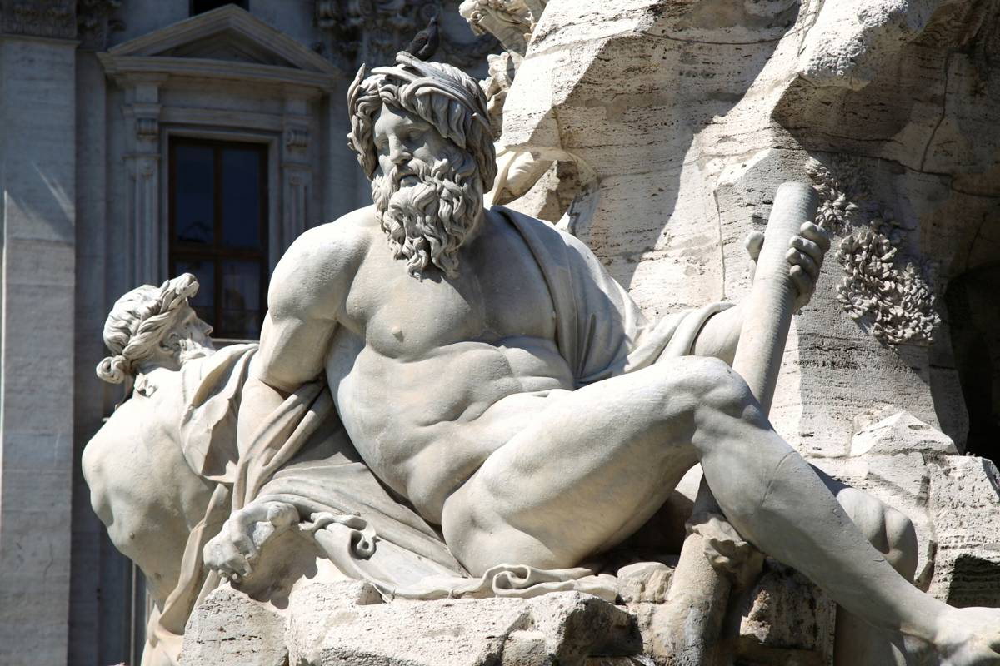
Rei dos deuses e governante do céu. Zeus controla os trovões e mantém a ordem entre os deuses e os mortais. Seu símbolo é o raio e ele habita o topo do Monte Olimpo.
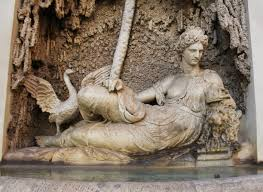
Deusa do casamento e da família. Hera é esposa de Zeus e rainha do Olimpo. Conhecida por sua força e por proteger os laços matrimoniais.

Deus dos mares e terremotos. Poseidon governa os oceanos com seu poderoso tridente e pode criar tempestades gigantescas.
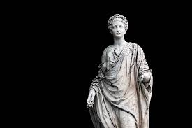
Deusa da agricultura e das colheitas. Deméter garante a fertilidade da terra e o crescimento dos alimentos para os humanos.
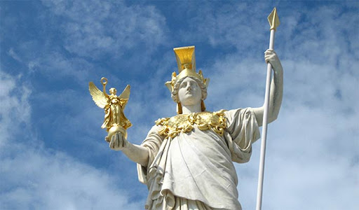
Deusa da sabedoria, estratégia militar e civilização. Atena é protetora da cidade de Atenas e símbolo de inteligência e justiça.
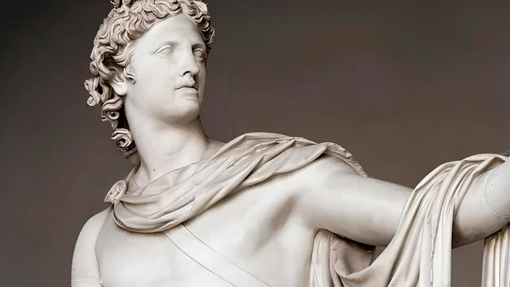
Deus do sol, da música e das artes. Apolo também era associado à medicina e à profecia.
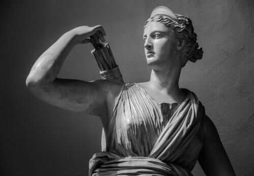
Deusa da caça, da natureza e da lua. Ártemis protege os animais e as florestas.
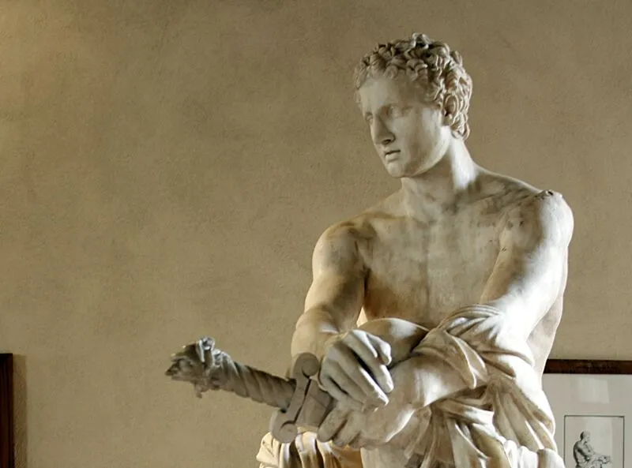
Deus da guerra e da violência dos combates. Representa o lado brutal das batalhas.
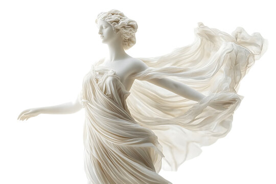
Deusa do amor, da beleza e do desejo. Afrodite nasceu da espuma do mar e representa a paixão e o encanto.
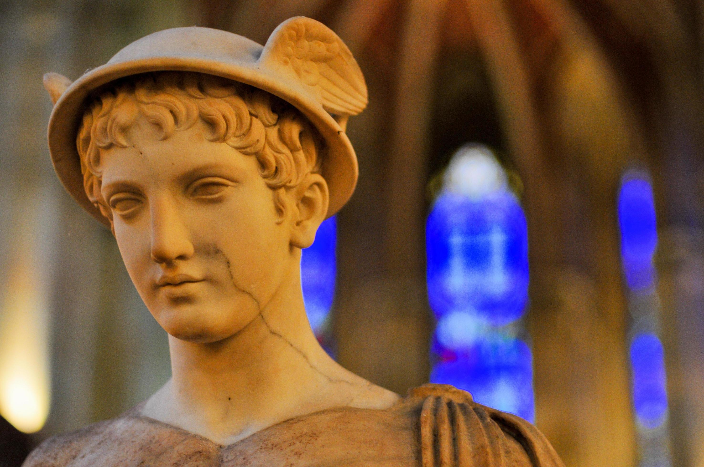
Mensageiro dos deuses. Hermes é o deus das viagens, comércio e comunicação.
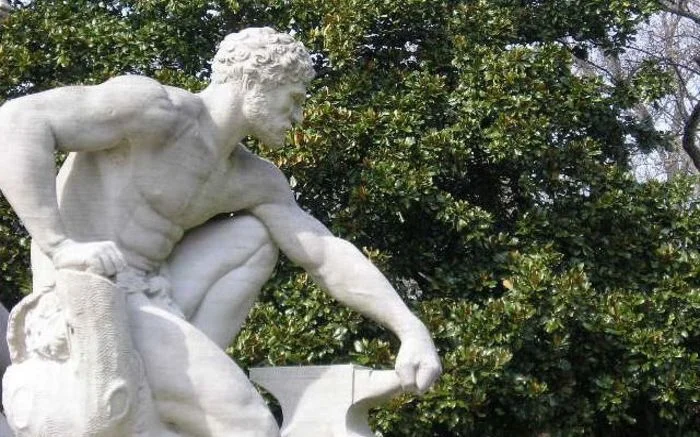
Deus do fogo e da forja. Hefesto cria armas e objetos mágicos para os deuses.
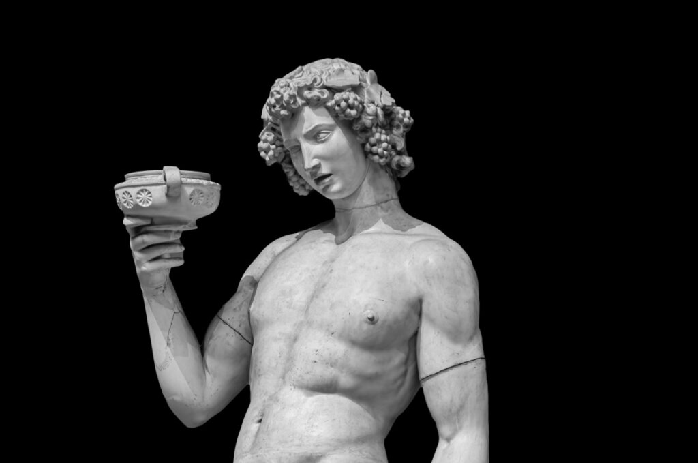
Deus do vinho, das festas e do teatro. Dionísio representa a alegria e a celebração da vida.